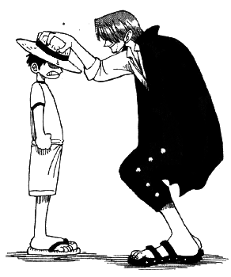
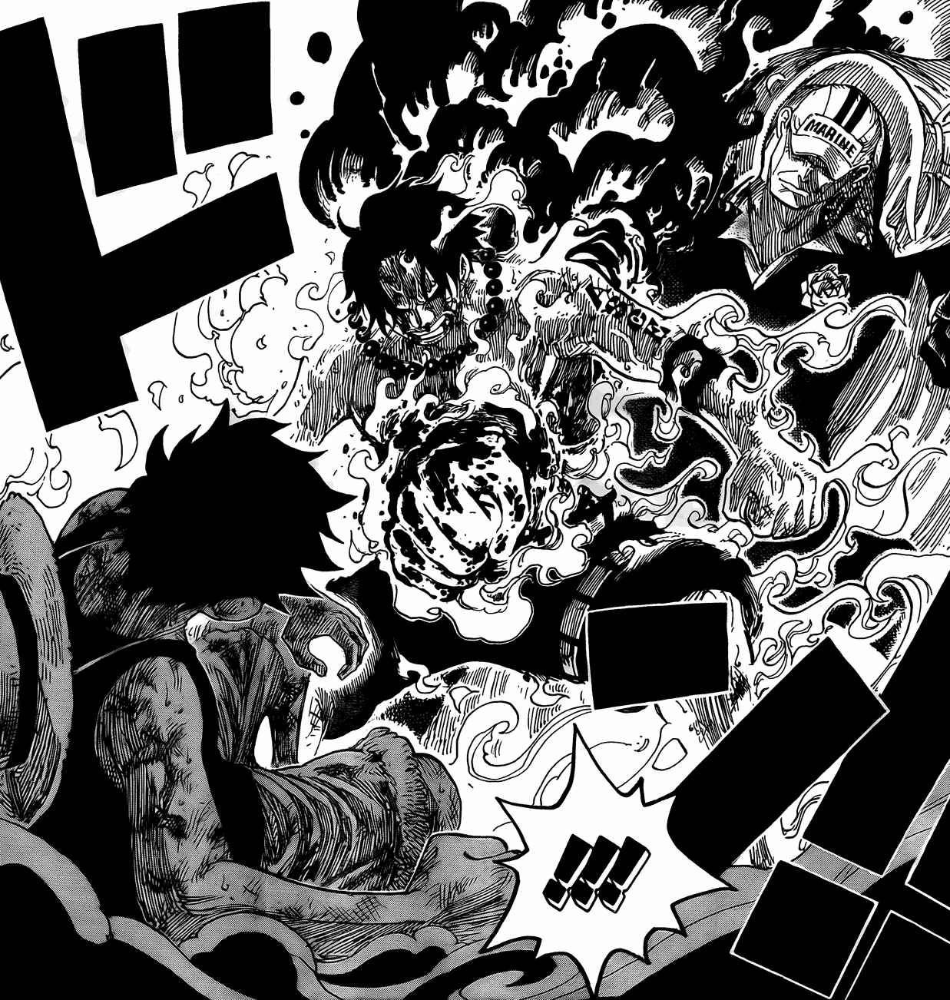

Monkey D. Luffy's origins are not yet fully known. However, the main plot point of Luffy's birth is that he is the son of the World Government's primary villain, Monkey D. Dragon, who is the leader of the revolutionary army.
Luffy intitially lived in Windmill Village, which is where he met the emperor of the sea, Red-Haired Shanks. Prior to meeting Shanks, Luffy disliked pirates, but Shanks' relaxed personality and sense of humor inspired Luffy to become a pirate. Shanks' straw hat was entrusted to him by the former King of the Pirates Gol D. Roger. Luffy always begged Shanks to allow him to be part of his crew, but Shanks always denied his request. Luffy didn't feel bad because of this, instead he was inspired to become King of the Pirates. As a child, Shanks was a part of Roger's crew and he realized that Luffy was saying nearly the exact same words as his former captain. Thus just as Roger entrusted the straw hat to Shanks, he entrusted it to Luffy. 
Luffy's pirate life before the timeskip allowed him to establish what he values in a person, and who he believes should be on his crew. Throughout his journey, he both saves countries and makes powerful allies. His charisma and joyful attitude make him different from most other pirates. Luffy is the opposite of what you would call someone who's "serious", but if his crew and friends are in danger, he won't crack a single joke.
Compared to many of the villains introduced before the timeskip, Luffy was actually one of the stronger characters in the show. But as characters in the World Government and pirates who are essentially god-like were introduced, Luffy's relative power seems meaningless. Especially during the Marineford Arc, where his brother Ace was executed by the government.
Fire Fist Ace was a commander of the Whitebeard Pirates, the crew of the emperor Whitebeard. A dissenter of the Whitebeard Pirates, Marshall D. Teach (AKA Blackbeard), captured Ace and turned him in to the World Government. Luffy got so close to saving Ace's life, nearly getting him onto a ship to leave Marineford entirely. But Ace's determination to avenge Whitebeard resulted in him being brutally murdered by Admiral of the World Government, Akainu (later known as Sakazuki). The worst part about his death, however, was that Luffy was sitting right in front of him. Luffy felt powerless. If Luffy had been stronger, maybe he could have saved Ace's life. This shattered Luffy's confidence and determination in becoming King of the Pirates. It took a beating from one of his new allies, Jimbei (former Navy Warlord), to make him realize that he still had an entire crew to protect. This arc was a turning point for Luffy, showing him that there are greater threats out there than what he has ever faced before. 
The timeskip occurred right after Ace's death. Luffy, alongside Former Vice Captain of the Roger Pirates, Dark King Rayleigh, trained on a deserted island for two years. He pledged to never let any of his comrades die again. As an older teenager, Luffy's intelligence is dramatically higher (although he is still a lovable idiot). His decisions aren't nearly as poorly thought out as they once were, the improvement is evident. Not much development to his character has been achieved during this time period yet, but we can expect Luffy to be traumatized again very soon...